The Retro Adapter connects almost any type of game controller to USB. It works with PCs running Windows/Linux and with Apple Macs, as well as the Sony Playstation 3.
The Retro Adapter is now available to buy ready-to-go or in kit form! See the Keiō web site for details. |
See the old Retro Adapter page for details of the original Retro Adapter.
BBC coverage of the original Retro Adapter and the new prototype (starts after the PacMan segment, at 1.35):
Updates
| 01.08.10 | - Firmware 2.1a released - Fixed NES/SNES/N64/GC two player mode - Added combined.hex (see firmware readme) |
| 18.07.10 | - Firmware 2.1 released - Mouse Mode now supports both a mouse and a joystick simultaniously for computer emulators (e.g. Amiga or Atari ST) - Reduced polling interval from 10ms to 8ms (120Hz or 2x 60Hz) - Nintendo Virtual Boy supported - SNES Mouse supported - BBC Micro Voltmace button mapping fixed (again) - Fixed N64 and Gamecube support (broken in 2.0) |
| 30.05.10 | - Firmware 2.0 released - 2 Player Mode now works are two separate joysticks for improved emulator support - Mouse support added, Amiga mice supported - Famicom trackball supported - Sega Arkanoid (paddle) controller supported - 3D0 gamepads supported - CD32 gamepads supported - Japanese Famicom Connector added - BBC joystick support improved - BBC Voltmace button mapping fixed - Compatibility improvement for Playstation controllers - Button mappings fixed - NES support improved - Atari Driving Controller improved, works with MAME/Arkanoid - Various bug fixes |
| 07.12.09 | - Firmware 1.4 released - Atari Paddles supported - PC Gamepad supported - Compatibility improvement for Sega Megadrive 6 button pad - Minor bug fixes |
| 04.10.09 | - Firmware 1.2 released, BBC Micro joysticks supported - Updated connections tables for BBC Micro - Schematics and PCB no longer prototypes |
| 07.09.09 | - Firmware 1.1 adds better Atari Driving controller support - Updated connections tables |
| 20.08.09 | - Finally reached 1.0! - Added Atari 2600 Driving controller, C16 and Plus/4 connections |
| 20.08.09 | - Firmware 0.9 released, bootloader added for updates over USB - Removed Dreamcast connection details for re-design - Updated DB15 key pins |
| 18.08.09 | - Changed all connector pinouts to accomodate bootloader |
| 17.08.09 | - PDF file with connector diagrams added - Photos of final production boards added |
| 21.07.09 | - Final V1.0 PCB and latest firmware added to download section |
| 21.07.09 | - Updated AVR to connector table with Up/Left fix |
| 21.07.09 | - Changed PC-Engine and PC-FX ID logic - Made tables more readable |
| 19.07.09 | - Fixed N64/GameCube connections - Fixed key for (1) - Uploaded firmware 0.2, Famicom/NES/SNES/N64/Gamecube working |
| 17.07.09 | - Fixed schematic and PCB |
| 16.07.09 | - Complete redesign of hardware |
After experimenting with the first prototype boards, I decided to redesign the hardware from scratch. The new design has both DB9 and DB15 connectors, and uses a more powerful AVR microcontroller with more flash memory and support for firmware upgrades over USB.
Details of the old design are archived here.
Controller support
Working, fully tested game controllers:
Not tested but expected to work:
Fully tested mice / trackballs:
Planned support:
* I have these controllers, the others I need to aquire.
Dreamcast Maple bus decoding is now working, but needs further testing. As far as I know I am the first person to achieve this on a microcontroller. The Saleae Logic logic analyser was invaluable in developing and debugging the code. I wrote a review for my blog.
Hardware Design
Many thanks to Seeed Studio for the excellent work they did on the prototype PCBs. I can recommend them for being friendly, helpful and producing excellent quality boards.
Connection map by AVR pin:
| ATmega168 | 9 pin D-sub | 15 pin D-sub |
| PD0 | 1 Up | 15 Up |
| PD3 | 2 Down | |
| PD4 | 3 Left | 14 Left |
| PD5 | 4 Right | |
| PD6 | 6 Button 1 | |
| PD7 | 7 Select | |
| PB0 | 9 Button 2 | |
| PB1 | 7 Down | |
| PB2 | 6 Right | |
| PB3 | 5 B | |
| PB4 | 4 D | |
| PB5 | 3 Select | |
| PC0 | 13 A | |
| PC1 | 12 C | |
| PC2 | 11 Start | |
| PC3 | 10 NC | |
| PC4 | 9 D (NC*) | |
| PC5 | 2 NC | |
| Vcc | 5 +5V | 8 +5V |
| GND | 8 GND | 1 GND |
* Pin 9 and pin 4 are connected to button D in Neo Geo controllers, but the Neo Geo only checks pin 4.
For details of Connector pinouts see this Google Docs spreadsheet. Keep in mind that I edit it from time to time so check for updates.
The PCB fits inside a DB9-DB25 converter shell, and has a DB9 at one end and a DB15 at the other. The DB9 can accept most DB9 controllers, such as Atari/Commodore style joysticks, as well as Sega Master System and Megadrive (Gensis) gamepads. With the right connectors it can take Nintendo NES/SNES/N64/Gamecube gamepads, as well as Atari driving controllers and a few others.
The DB15 on the other end can directly accept Neo Geo joysticks and gamepads. With extra connectors it can take all other supported controllers, and there is room for expansion. By grounding certain pins, the AVR automatically knows which connector is attached so everything is simply "plug in and go."
The DB9-DB25 converter box is a cheap and readily available enclosure. A single hole for the USB cable needs to be drilled in one side. The USB spec mandates a captured cable, and using one also means that the position of the hole is not critical.
The ATmega168 microcontroller has enough I/O ports to cover every pin on each connector, with only two being shared. The 16K flash memory is more than enough with plenty of room for expansion, and also supports bootloading for firmware upgrades over USB.
The ultimate goal is to have an easy to build design which can be produced in kit form, and which is extendable for new controllers. The AVR is the only surface mount component, all others are through-hole. Initial programming is done via the DB15 and a special reset test point, after which firmware can be updated via USB. The AVR's TQFP package is not too difficult to solder, but I will provide pre-soldered and programmed chips for kit builders.
Connectors
To connect controllers which do not use a DB9 or DB15 to the Retro Adapter a Connector is required. Connectors are mostly just wiring, but a few require extra hardware too.
Preliminary controller connections: Google Spreadsheet
Connector diagrams
(view looking in to console, pin 1 indicated):
| 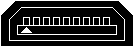 | 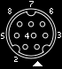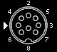 | 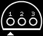 | ||||||
| Sega Saturn | Playstation | Super Famicom SNES | PC-Engine TurboGrafx | N64 | ||||
| 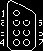 | 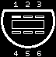 | |||||||
| Famicom NES | Gamecube |
PDF containing all connectors with both console and controller ends: connectors.pdf
N64 and Gamecube Connectors require a 3.3V regulator to generate the required voltage. Almost any type will do as long as it can supply more than 100mA. I use TO-92 package fixed 3-pin regulators, the exact model depending on what I can get cheaply at the time :-)
Since both Connectors are quite similar you can make a combined N64+Gamecube Connector. If you do, do not connect both controllers at once.
| 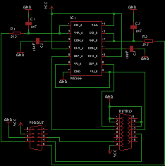 |
Atari Paddle Connectors require a 556 timer, similar to the one used in the Atari 2600. See the schematic on the left for details. Due to the age of the controllers the paddles often jump around when in use. This can be corrected by either replacing the potentiometers (linear 1MΩ) or by opening the orginal pots and cleaning them. |
The 2 Player Connector gives you a second DB9. You can connect Atari/Commodore style joysticks, Sega Master System and Megadrive (Genesis) gamepads and NES/SNES Connectors to it. N64 and Gamecube support may be added at a later date.
With the 2 Player Connector the Retro Adapter switches to dual joystick mode. In this mode the computer sees two separate joysticks attached, one for each player. You can then select one joystick per player in emulators.
Firmware Design
The firmware makes use of V-USB, a free open-source software only USB framework for AVR microcontrollers. In my tests compatibility is excellent and latency extremely low. Code size is also small and the design flexible. While I prefer using assembler, as I did with Igor's original implementation, C seems to be more common and will hopefully generate some community support. Assembler is used for some timing critical routines (notably N64/Gamecube and Dreamcast protocols).
A bootloader provided with the V-USB framework allows updates to be loaded without the need for an AVR programmer. I re-compiled the Windows bootloader program with the correct VID/PID pair but otherwise did not modify it.
Button mappings were originally decided upon by myself based on what I thought seemed logical. The idea is to have certain common buttons, such as start/select and shoulder buttons always mapped to the same buttons on the USB side. That way once buttons have been set up in a particular game or emulator, most controllers will just work with no further remapping necessary.
That was the plan, until Sony scuppered it :( The Playstation 3 has it's own particular mapping scheme, and in order to have Playstation pads map correctly I have had to change my scheme entirely. At least everything will still be consistent.
Finished Product
| 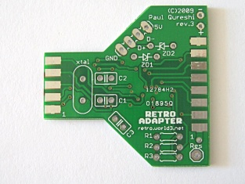 | 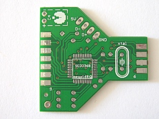 | ||
| PCB rev. 3 top | PCB rev. 3 bottom | ||
| 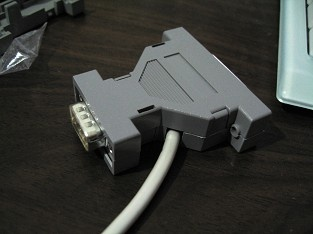 | 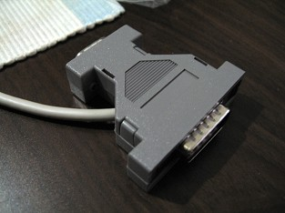 | ||
| Assembled | Assembled |
The final production PCB was manufactured by Seeed Studio. After 3 revisions, everything is perfect.
The AVR has been moved to the bottom of the board to ease the layout of the PCB tracks. I was concerned that due to some parts of the board being close to the tolerances Seeed Studio set out there might be quality issues, but after insepecting all 25 boards I received they all apear to be error free.
The PCB design is available in Cadsoft Eagle format in the archive below.
Download
Latest firmware, source code, schematic and PCB:
RetroAdapterV2_2.1a.lzh / RetroAdapterV2_2.1a.zip
Older versions:
RetroAdapterV2_2.1.lzh / RetroAdapterV2_2.1.zip
RetroAdapterV2_2.0.lzh / RetroAdapterV2_2.0.zip
RetroAdapterV2_1.4.lzh / RetroAdapterV2_1.4.zip
RetroAdapterV2_1.3.lzh / RetroAdapterV2_1.3.zip
RetroAdapterV2_1.2.lzh / RetroAdapterV2_1.2.zip
RetroAdapterV2_1.0.lzh / RetroAdapterV2_1.0.zip
RetroAdapterV2_0.9.lzh / RetroAdapterV2_0.9.zip
RetroAdapterV2_0.8.lzh / RetroAdapterV2_0.8.zip
{kind=link}
{kind=link}
{kind=link}
{kind=link}
{kind=link}
{kind=link}
{kind=link}